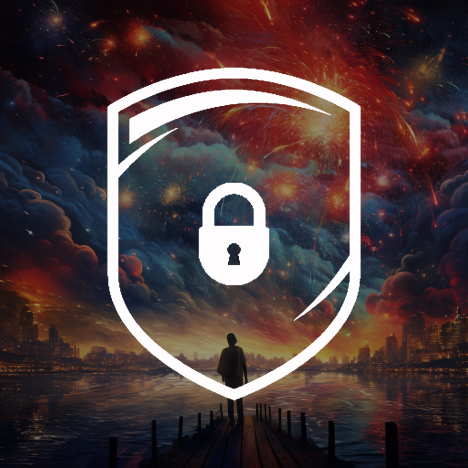

IL sito è in collaborazione con :
🖤Kushy Music🖤
Un giorno mi ricorderanno come il perdente che è riuscito a vincere.
Ascolta la mia musica su Youtube
Ascolta su Youtube
🔐 S.A.D.I 🔐
✅️ | S.A.D.I - CHI SIAMO?
S.A.D.I è un progetto nato da un gruppo di amici per mettere al sicuro Le community italiane di tutte le tipologie, molti utenti utilizzano Discord in maniera incivile ed inappropriata; raidando server, insultando gravemente le persone e spammando link di iniviti ecc...
Lo scopo di S.A.D.I è quello di avvisare lo Staff di una Community qualora un utente pericoloso entri nel vostro server Discord, mettendo al primo posto la prevenzione della sicurezza delle community evitando eventi disturbanti futuri.
Eseguiamo segnalazioni utilizzando il nostro bot, che vi avviserà quando un utente pericoloso entra all'interno della vostra comunità, in alcuni casi i nostri operatori dell'Inteliggence ricorreranno addirittura a vere e proprie segnalazioni al supporto discord.
Tutti gli utenti di Discord possono eseguire segnalazioni fornendoci delle eventuali prove.
#RESTA AL SICURO CON S.A.D.I
Entra in sadi

Aggiungi S.A.D.I Bot
🌿Stripe climate🍃
Lo scopo di stripe climate è quello di ridurre le emissioni di co2 nel nostro pianeta, attraverso progetti di finaziamento delle aziende che sfruttano la piattaforma Stripe dove donano una piccola somma di denaro per sostenere questo progetto.
Vai a stripe cliamte